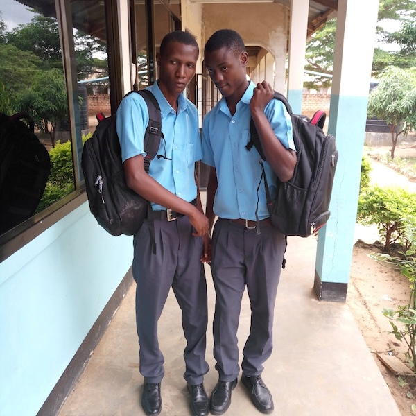
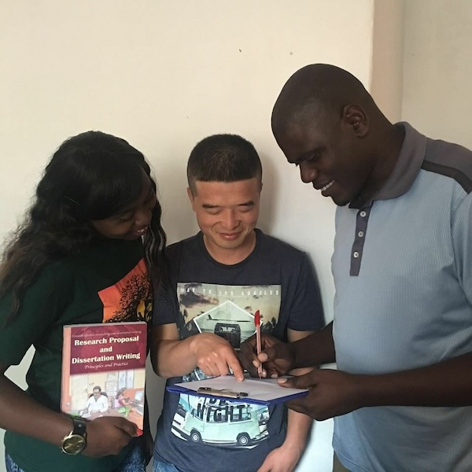
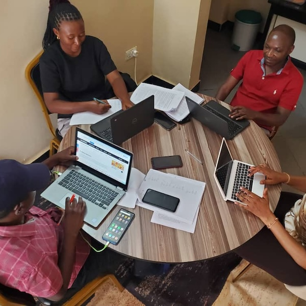

The Teachers Exchange Program (FTEP), organized by the FIEN Foundation, is designed to support and enhance the professional
development of educators in primary and secondary schools throughout Tanzania. This initiative offers local teachers the
opportunity to expand their teaching skills, deepen their knowledge, and gain valuable experience through collaboration with
international colleagues. The program provides a platform
...
Show more
for teachers to learn from each other, fostering an environment of
mutual growth and improvement.
FTEP also seeks to promote global collaboration by inviting experienced teachers from developed countries such as the United States and Europe to share their expertise and innovative teaching methods with Tanzanian educators. Through this exchange, both local and international teachers benefit from cross-cultural learning, which enriches their understanding of diverse educational practices. This collaboration strengthens instructional strategies and enhances teaching effectiveness, ultimately raising the overall quality of education in Tanzania. By building these global connections, the FIEN Foundation hopes to contribute to the continuous improvement of education in Tanzania, ensuring that all students have access to high-quality instruction.
Show less
Inclusive Education Program
A significant number of disabled students in Tanzania are currently deprived of their fundamental right to education,
primarily due to inadequate infrastructure that fails to meet their needs. Many schools, both private and public, lack
essential accommodations such as accessible toilets, wheelchair-friendly pathways, and other critical facilities, creating
barriers that prevent disabled students from fully participating in school life. As a result, these students are often
excluded...
Show more
from educational opportunities, limiting their potential and future prospects.
The FIEN Foundation is committed to addressing this issue by improving school facilities to
ensure that disabled students can study alongside their peers in an inclusive and supportive environment. Our initiative
focuses on installing accessible toilets, building wheelchair-friendly pathways, and making other necessary adjustments
in schools across Tanzania. We believe that every student, regardless of their ability, deserves the chance to learn and
thrive. We kindly ask for your support in promoting inclusive education in Tanzania by donating to this essential
initiative. Your contribution will help us create an environment where all students have equal opportunities to succeed,
regardless of the challenges they may face. Together, we can make a meaningful difference in the lives of disabled
students and contribute to a more inclusive future for all.
Show less
FIEN Health Insurance Program
In Tanzania, thousands of students face the unfortunate reality of lacking access to essential medical services when
they fall ill. This absence of adequate healthcare not only jeopardizes their health but also has a significant negative
impact on their academic performance. When students are sick, they miss valuable class time, fall behind on coursework,
and experience heightened
...
Show more
levels of stress and anxiety. These factors
can severely hinder their ability to succeed in
their studies, making it more difficult for them to achieve their academic potential.
Many of these students come from families that are unable to afford medical care or insurance, which further exacerbates
their challenges. In the absence of reliable healthcare coverage, even minor illnesses can quickly escalate into more serious
health issues, causing prolonged absences from school and affecting students' overall well-being. Additionally, these students
often rely on uncertain aid, which may not always be available or sufficient to meet their medical needs. The lack of health
insurance creates a cycle of vulnerability, not only affecting the students but also
their families and communities, as they bear the emotional, physical, and financial consequences of inadequate medical care.
The Peer to Peer Program (PPP), initiated by the FIEN Foundation, is a comprehensive initiative designed to foster solidarity,
care, and mutual support among students in Tanzania. At its core, the program focuses on peer-to-peer support, encouraging
students to help one another in various meaningful ways. One key aspect of the program involves graduate students from primary
and secondary schools donating
Show more
their gently used uniforms to continuing students in need. This act of generosity not only
addresses the practical challenge of accessing essential school supplies but also cultivates a sense of community and shared
responsibility among students.
Beyond uniform donations, the program promotes
academic support through student-led initiatives such as clubs, group discussions, debates,
and competitions. These activities create opportunities for students to collaborate, share knowledge, and enhance their learning
experiences together. By engaging in these peer-driven efforts, students develop stronger bonds and a culture of caring and mutual
assistance.
To recognize and celebrate the generosity of donor students, the FIEN Foundation awards certificates of appreciation to those who
participate in the program. These certificates serve as a token of gratitude and further encourage a culture of giving and peer support.
Over the years, the Peer to Peer Program has made a significant impact, helping countless students access school uniforms and fostering
an environment of solidarity and academic collaboration. As the program continues to grow, it remains a vital part of the FIEN
Foundation’s mission to improve educational outcomes and support needy students in Tanzania.
Show less

Digital Teaching Program
The Digital Teaching Program (DTP) is designed to empower teachers and schools by providing them with the necessary
knowledge and tools to effectively integrate digital technology into the classroom. With the increasing importance of
digital literacy, the program focuses on improving teaching practices through the use of various digital platforms and
resources. By incorporating technology, educators can enhance
...
Show more
student engagement, streamline administrative tasks, and
create an enriched learning environment that promotes greater academic achievement.
One of the key features of the program is
its support for schools in developing academic websites. These websites serve as an essential
hub for both teachers and students, offering access to a wide range of online resources. Through these platforms, teachers can share notes
and assignments with their students, while students can easily access learning materials at their convenience. The websites also enable
schools to manage academic tasks more efficiently, such as processing student results, generating examination reports, and tracking
individual academic progress.
In addition to the creation of academic websites, the DTP helps schools streamline the evaluation process. The program includes tools
for ranking students based on their performance, allowing teachers to easily identify top-performing students and provide tailored support
to those who may need additional assistance. The digital platform generates detailed results reports that assist educators in monitoring
student progress, while also maintaining accurate and up-to-date academic records for each student. This helps in providing a more
organized and transparent system for both teachers and parents.
To ensure that teachers are able to fully utilize these digital tools, the DTP also offers training on the effective use of Information
and Communication Technology (ICT) facilities. The program provides schools with essential ICT resources, such as laptops and other
digital tools, to facilitate the integration of technology in teaching. By equipping teachers with both the hardware and the skills
needed to incorporate technology into their lessons, the program ensures that digital technology becomes an integral part of everyday
teaching, ultimately improving the learning experience for students.
Show less
Language Proficiency Program
The Language Proficiency Program (LPP) is designed to enhance students' language skills in both primary and secondary
schools across Tanzania, with a strong emphasis on improving their proficiency in the English language. Recognizing that
English is the primary medium of instruction in many subjects, the program aims to equip students with the necessary skills
to
...
Show more
comprehend, speak, read, and write fluently. By strengthening their command of English, LPP enhances students' overall
academic performance and fosters better engagement in both local and global contexts. The ability to express ideas clearly
and understand complex academic content in English
plays a crucial role in improving learning outcomes and preparing students for higher education and future career opportunities.
Beyond supporting Tanzanian students, LPP also extends its services to international students and volunteers through specialized
Swahili language classes tailored for beginners. This initiative is implemented in collaboration with the FIEN Foundation and
experienced Swahili instructors, ensuring high-quality language training. The Swahili classes are particularly beneficial for
interns and volunteers who travel to Tanzania to work on various community development projects with the FIEN Foundation. By
equipping them with basic Swahili language skills, the program helps bridge communication gaps, fosters deeper cultural
integration, and enhances their ability to interact meaningfully with local communities.
Show less
FIEN Scholars Program
The FIEN Scholars Program (FSP) is dedicated to supporting local students in their pursuit of higher education
opportunities abroad. The program aims to guide and assist students in applying for admission to top universities across
the globe, including institutions in the United States, Canada, China, Europe, Australia, and Japan. By providing tailored
...
Show more
support, the program helps students navigate the complexities of international applications, ensuring that they are
well-prepared and confident in securing spots at renowned universities worldwide.
In addition to assisting with the application process, the FSP focuses
on helping students secure scholarships to ease the
financial burden of studying abroad. Many students face financial constraints when considering international education, and
the program is committed to connecting them with various scholarship opportunities. This includes identifying funding options,
offering guidance on writing scholarship essays, and advising on how to meet the requirements for different scholarship
programs. Through these efforts, the FSP makes higher education abroad more accessible to deserving
local students, regardless of their financial background.
Furthermore, the FIEN Scholars Program provides mentorship and resources to ensure students are fully prepared for the
challenges of studying in foreign countries. This support includes pre-departure orientation, cultural integration advice, and
ongoing academic counseling to help students thrive in their international studies. By fostering a network of successful
scholars and offering continuous support, the program ensures that students not only gain admission to prestigious institutions
but also excel in their academic journeys abroad. The FSP empowers local students to pursue their dreams and open doors to global
opportunities.
Show less
FIEN Research Program
The FIEN Research Program (FRP) is an initiative aimed at supporting university students, both locally and internationally,
in successfully conducting research and excelling in their academic endeavours. Recognizing the challenges many students face
while conducting research, the program offers a variety of services tailored to ensure their success. The FRP provides
comprehensive support for students throughout the entire research
...
Show more
process, from the initial stages of selecting a topic
to the final analysis of results. This initiative is designed to empower students to overcome common research obstacles and
achieve their academic goals.
For local university students, the FRP focuses on providing expert consultation in key areas such as research methodology
and data collection. Many students struggle with understanding the appropriate methods for gathering and analyzing data,
which can significantly impact the quality of their research. The program addresses this by offering personalized guidance on
how to select the most suitable research methodologies, as well as offering support on how to collect and organize data
effectively. Through these consultations, students gain the necessary skills and confidence to conduct thorough, high-quality
research in their respective fields.
For international students, the FRP goes a step further by offering additional services to ensure they can conduct research
seamlessly in a local context. This includes assisting with obtaining research permits, arranging accommodation, and providing
necessary support for hiring enumerators and finding suitable study areas. The program also connects international students with
local supervisors who can offer guidance and expertise in their area of study. By facilitating these critical components, the
FRP ensures that international students have a smooth and productive research experience, allowing them to focus on their
academic work without being burdened by logistical challenges. Through this comprehensive support system, the program enables
both local and international students to succeed in their research and further their academic careers.
Show less

Free WI-FI Program
The Free Wi-Fi Program (FWP) is an initiative designed to support students by providing them with reliable internet access
at the FIEN centers. In today’s digital age, the internet is a crucial tool for academic success, allowing students
to access a wealth of resources for self-learning, assignments, and research projects. Recognizing the importance of internet
connectivity in education, the FWP ensures
Show more
that students have free, uninterrupted access to Wi-Fi, enabling them to engage in
their studies without the hindrance of limited or expensive internet access.
The primary goal of the FWP is to empower students to take full advantage of online learning opportunities, which have become
an essential part of modern education. By providing a stable internet connection, the program helps students access educational
materials, participate in online
courses, and collaborate with peers and instructors. Whether students are working on individual assignments or engaging in group
research projects, the availability of free Wi-Fi ensures that they can complete their tasks efficiently and effectively. This
access supports not only academic learning but also fosters a culture of independent study and personal growth.
In addition to aiding students with their academic work, the FWP also helps to bridge the digital divide, ensuring that all
students, regardless of their financial background, have equal access to the resources they need to succeed. Many students face
challenges due to a lack of reliable internet at home, which can hinder their academic progress. By offering free Wi-Fi at our
FIEN centers, the program provides a safe and supportive environment for students to work, collaborate, and access online
research tools. The FWP plays a critical role in helping students achieve academic excellence by removing barriers to information
and creating opportunities for success in their educational journeys.
Show less

FIENtech Program
The FIENTech Program fosters creativity and innovation among students in Tanzania, empowering them to develop solutions for
challenges in their communities. Recognizing the immense potential of young minds, the program encourages critical and creative
thinking through a hands-on approach that integrates design thinking and technology. Students engage in identifying community challenges, developing innovative solutions, creating prototypes, testing them, and refining
...
Show more
their ideas based on community feedback. With access to tools, resources, and mentorship, they gain practical experience in
problem-solving. Beyond enhancing creativity, the program instills a sense of social responsibility, inspiring students to become
change makers in their communities. By addressing local challenges, they gain a deeper appreciation for education's role in solving
problems, and make a lasting impact on their communities.
Show less
Mental Health Program
Mental Health Program (MHP) is designed to prioritize the emotional well-being of students in Tanzania, providing them with the support they need to manage both personal and academic challenges. As students face various stressors, ranging from academic pressures to personal struggles, the MHP serves as a safe space where they can receive professional counseling and guidance tailored
...
Show more
to their specific needs. By addressing mental health concerns in an open and supportive environment, the program helps to reduce stigma and encourages students to seek help when they need it most.
One of the key objectives of the MHP is to support students in their personal development by equipping them with valuable tools to cope with stress, anxiety, and other mental health issues. Through individual counseling, group therapy sessions, and workshops, students are introduced to coping mechanisms such as mindfulness, emotional regulation, and problem-solving skills. These techniques are designed not only to address immediate challenges but also to build long-term mental resilience that can help students navigate future obstacles with confidence and self-assurance.
Additionally, the MHP places a strong emphasis on academic success, recognizing that mental health is closely tied to a student's ability to perform well in their studies. By offering guidance on time management, organization, and stress reduction, the program helps students balance the demands of school with their mental well-being. The MHP also works closely with academic staff to ensure that students receive the appropriate accommodations and support if they are facing mental health challenges that impact their learning experience. This holistic approach ensures that students have the resources and strategies needed to succeed both academically and emotionally.
Lastly, the Mental Health Program aims to create a community of students who feel supported, understood, and empowered to prioritize their mental health. By offering counseling and guidance, the program helps students develop the emotional tools necessary for lifelong success. This initiative fosters an environment of care and compassion, where students are encouraged to seek assistance when needed and are provided with the ongoing support required to thrive in all aspects of their lives. Through this program, students are better equipped to handle adversity, achieve personal growth, and navigate the complexities of their academic and personal journeys with resilience.